| Adjustment method | AUROC | 95% CI1 | p2 |
|---|---|---|---|
| EGA + weight | 0.588 | (0.573-0.604) | NA |
| EGA | 0.621 | (0.606-0.637) | <0.001 |
| EGA + GDA | 0.624 | (0.608-0.639) | <0.001 |
| EGA + SRE | 0.634 | (0.619-0.650) | <0.001 |
| EGA + SRE + GDA | 0.636 | (0.621-0.651) | <0.001 |
| EGA: estimated gestational age; GDA: genetically determined ancestry; SRE: self-reported ethnicity | |||
| AUROC: area under receiver operating curve | |||
| 1 Bootstrap estimation of the 95% confidence interval of the AUROC (2000 replicates) | |||
| 2 Bootstrap test for the difference between successive AUROC curves (2000 replicates) | |||
Preeclampsia
First-trimester PAPP-A levels: influence of genetically determined ancestry and implications for preeclampsia prediction
Dr Omar B Forge Risk
King’s College London (Wellcome Trust), Imperial College London (NIHR)
What’s the scale of the problem?
MMR per 100,000 births. Population attributable fraction of preeclampsia and haemorrhage.1

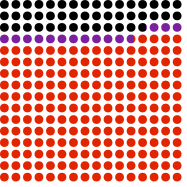
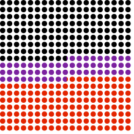
Preeclampsia is predictable
Detection rate: 40%
Detection rate: ~5%
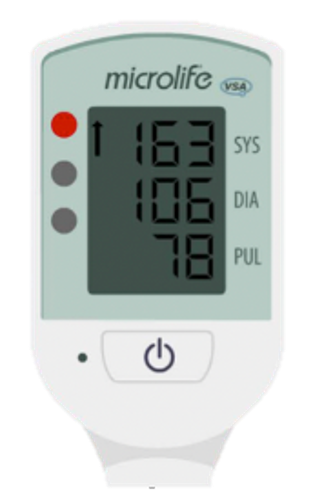

Detection rate: 70%
Preeclampsia is preventable

Uptake ~ 2%
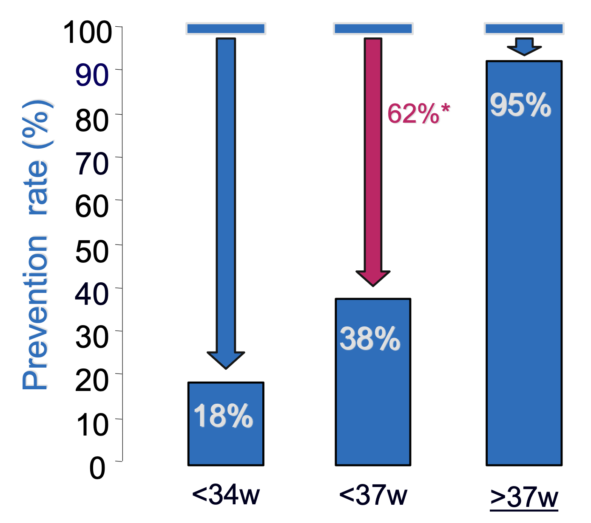
Rolnik et al. (2017)
Early prediction enables us to target aspirin to delay severe preeclampsia and save lives.
Biomarkers help, but may require adjustment for ethnicity
West African GDA: independent risk for PE
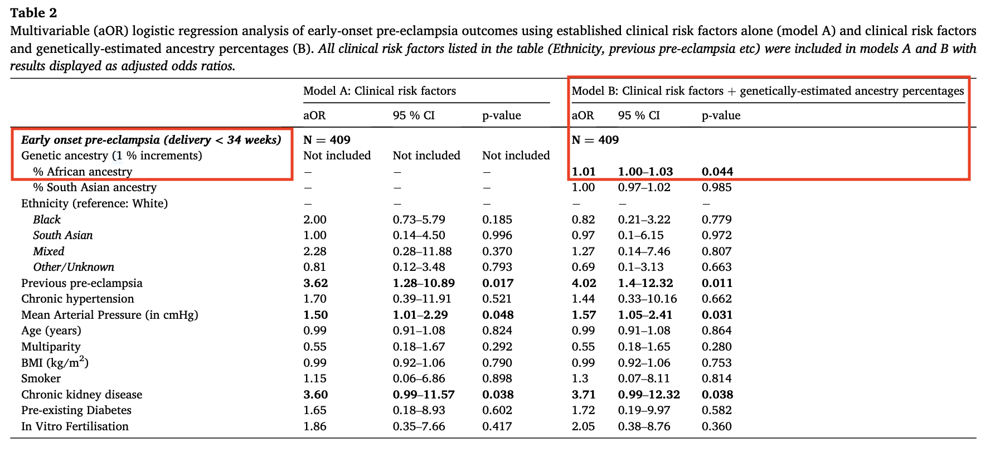
Conti-Ramsden et al. (2024)
Research questions
- Is there an independent association between GDA and levels of an angiogenic biomarker (PAPP-A)?
- If so, which ancestry group(s)?
- Can adjustment for GDA offer improved predictive utility for preeclampsia versus ethnicity alone?
Methods: sample
- Case-Control sample (n = 5,207 after genomic QC)
- Harris Birthright Cohort
- First trimester recruitment with follow-up to delivery
- Case definition: early onset preeclampsia (n = 2,127)
- Control definition: normotensive (n = 3,080)
Methods: genomics
Genotyping (Illumina GSA v3)
- ~700,000 variants optimised for admixed populations
Calling (Illumina GenCall)
QC (Plink 1.9)
- Sex discordance
- Cryptic relatedness
- Autosomal SNPs \(< 5\%\) missing & MAF \(> 1\%\)
- Population aggregated HWE P-value \(> 10^{-4}\)
Methods: genetically determined ancestry
- Supervised ADMIXTURE v1.3 (1000G reference)
- GDA: proportions sum to 1
- 26 populations (e.g. Yoruba)
- 5 superpopulations (e.g. African)
- African regional populations (e.g. West African)
Statistical Analysis
Inference & feature selection
- Inverse probability of selection weighting
- Least Absolute Shrinkage and Selection Operator
Adjustment:
- Unweighted LASSO among controls
- \(MoM(\) PAPP-A \()_i = \frac{y_i}{\hat{y}_i}\)
Prediction:
- Univariate weighted logistic regression
- (AU)ROC, bootstrap CI estimation (n = 2000)
Results: admixture
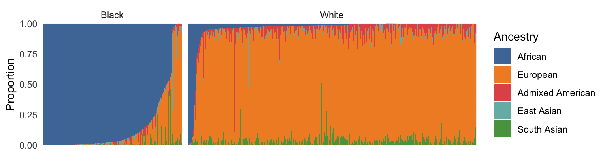Genetically estimated ancestry proportions among study cohort (n = 5207).
Results: admixture
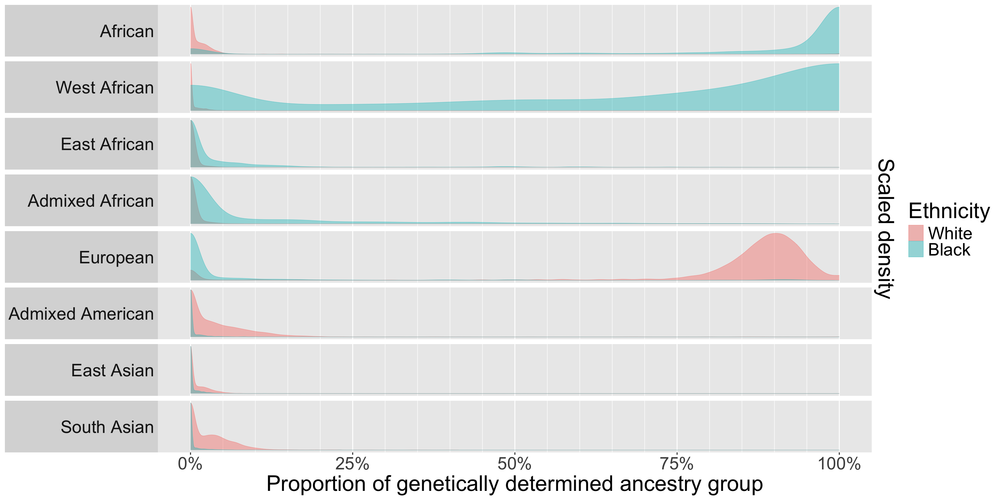Scaled density of genetically estimated ancestry proportions among study cohort (n = 5207).
Results: admixture
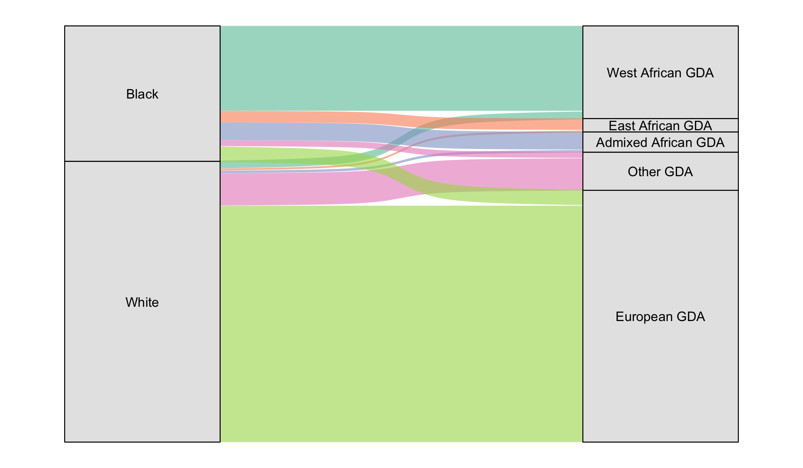Sankey plot showing the reclassification of self-reported ethnicity by overall sample proportions of genetic ancestry estimates.
Results: PAPP-A discrimination
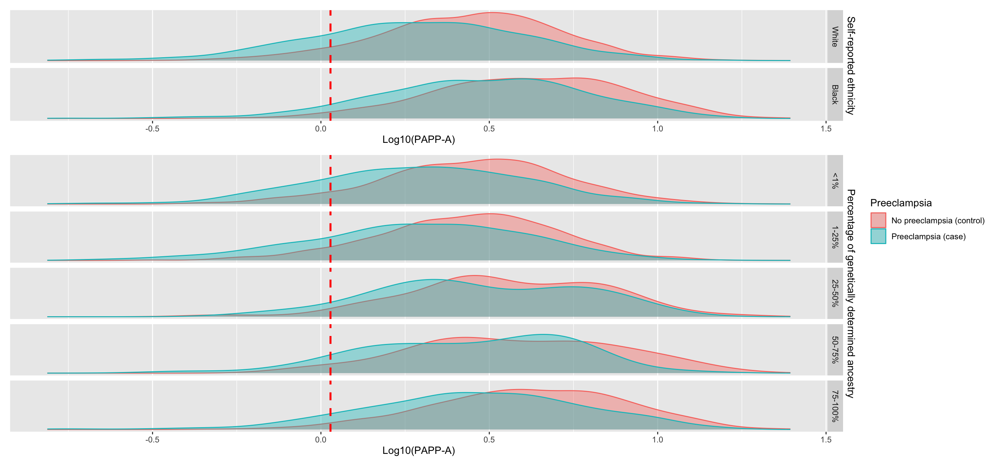Density of log10(PAPP-A) level in cases and controls by self reported ethnicity and strata of individual proportion of African superpopulation ancestry. Red line indicates cutoff defined by a 10% screen positive rate in the overall sample.
Results: effects on PAPP-A
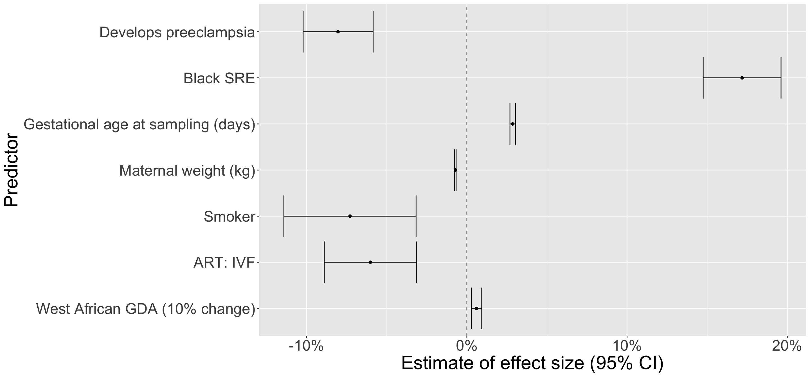Estimated OLS effects on log10(PAPP-A) of predictors selected by LASSO regression.
Results: prediction performance
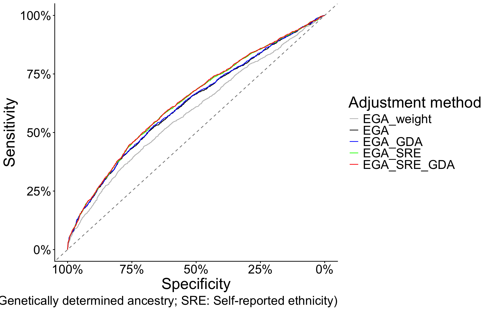Receiver operator curves for the accuracy of preeclampsia prediction by univariate logistic regression of MoM(PAPP-A).
Results: prediction performance
Results: prediction performance
PAPP-A adjustment method
|
||||||||||||
|---|---|---|---|---|---|---|---|---|---|---|---|---|
| Ethnicity |
EGA
|
EGA + GDA
|
EGA + SRE
|
EGA + SRE + GDA
|
||||||||
| SPR | DR | 95% CI | SPR | DR | 95% CI | SPR | DR | 95% CI | SPR | DR | 95% CI | |
| White | 50.0% | 62.7% | (60.2-65.2%) | 50.0% | 63.0% | (60.3-65.3%) | 50.0% | 62.7% | (60.2-65.3%) | 50.0% | 63.0% | (60.4-65.6%) |
| Black | 27.4% | 35.7% | (32.5-39.1%) | 30.2% | 39.6% | (36.1-43.0%) | 47.0% | 56.8% | (53.3-60.3%) | 49.9% | 59.6% | (56.0-63.0%) |
| EGA: estimated gestational age; GDA: genetically determined ancestry; SRE: self-reported ethnicity | ||||||||||||
| SPR: screen-positive rate; DR: detection rate (sensitivity) | ||||||||||||
Thank you
Supervisors:
- Dr Antonio de Marvao
- Dr Fran Conti-Ramsden (post-doc. QC & ADMIXTURE)
Collaborators:
- Prof Kypros Nicolaides (funding, cohort)
- Dr Pirro Hysi (genotype calling)


References
Conti-Ramsden, F., A. de Marvao, C. Gill, L. C. Chappell, J. Myers, D. Vuckovic, A. Dehghan, and P. G. Hysi. 2024. “Association of Genetic Ancestry with Pre-Eclampsia in Multi-Ethnic Cohorts of Pregnant Women.” Pregnancy Hypertens 38 (December): 101162. https://doi.org/10.1016/j.preghy.2024.101162.
Hollier, Lisa M., Ashley Busacker, Fanny Njie, Carla Syverson, and David A. Goodman. 2024. “Pregnancy-Related Deaths Due to Hemorrhage: Pregnancy Mortality Surveillance System, 20122019.” Obstetrics & Gynecology 144 (2): 252–55. https://doi.org/10.1097/AOG.0000000000005628.
Knight, Marian, Allison Felker, Roshni Patel, Rohit Kotnis, and Sara Kenyon. 2025. “Saving Lives, Improving Mothers’ Care: Lessons Learned to Inform Maternity Care from the UK and Ireland Confidential Enquiries into Maternal Deaths and Morbidity 2021-23.” https://ora.ox.ac.uk/objects/uuid:5d6c56bc-17ee-49d8-8702-8f235102479b.
Rolnik, Daniel L., David Wright, Liona C. Poon, Neil O’Gorman, Argyro Syngelaki, Catalina De Paco Matallana, Ranjit Akolekar, et al. 2017. “Aspirin Versus Placebo in Pregnancies at High Risk for Preterm Preeclampsia.” New England Journal of Medicine 377 (7): 613–22. https://doi.org/10.1056/NEJMoa1704559.
Shafiq, Yasir, Marta Caviglia, Zainab Juheh Bah, Francesca Tognon, Michele Orsi, Abibatu K. Kamara, Caracciolo Claudia, et al. 2024. “Causes of Maternal Deaths in Sierra Leone from 2016 to 2019: Analysis of Districts’ Maternal Death Surveillance and Response Data.” BMJ Open 14 (1): e076256. https://doi.org/10.1136/bmjopen-2023-076256.
Wright, A., P. von Dadelszen, L. A. Magee, A. Syngelaki, R. Akolekar, D. Wright, and K. H. Nicolaides. 2023. “Effect of Race on the Measurement of Angiogenic Factors for Prediction and Diagnosis of Pre-Eclampsia.” BJOG 130 (1): 78–87. https://doi.org/10.1111/1471-0528.17296.